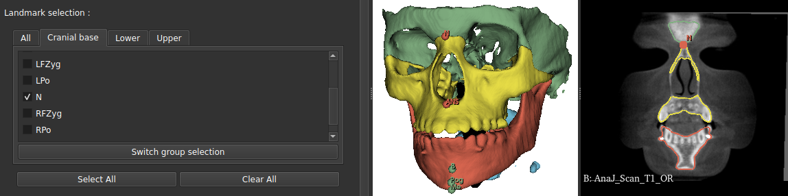
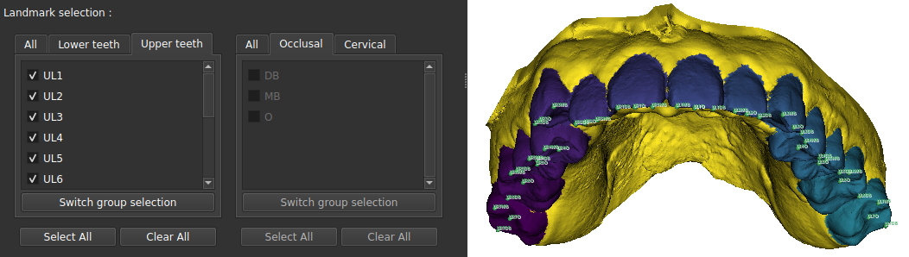

ALI — poser des landmarks automatiquement
ALI place des points de repère anatomiques sur vos scans, à votre place. Il fonctionne aussi bien sur un CBCT (un volume) que sur une empreinte optique (une surface), avec deux moteurs différents mais une seule fenêtre.
Quand s'en servir
Dès que vous avez besoin de repères et que les poser à la main serait long : une dizaine de points sur un patient, c'est supportable ; sur une série de quarante, ça ne l'est plus. ALI est aussi le fournisseur de repères de plusieurs autres modules — si vous lancez une orientation ou un recalage automatique, il tourne déjà pour vous, sans que vous ayez à l'ouvrir.
Le module choisit tout seul selon vos données : CBCT pour un volume, IOS pour une empreinte. Vous n'avez qu'à indiquer de quel type sont vos fichiers et quels points vous voulez.
Ce qu'il vous faut, ce que vous obtenez
À fournir
- Un dossier de scans — CBCT en
.nii.gz, ou empreintes en.vtk - Le groupe de points voulu, coché dans la liste
- Les modèles entraînés, à télécharger une fois
Ce qui sort
- Un fichier de points par scan et par groupe, au format Slicer
(
.mrk.json) - Ouvrable directement dans la scène, déplaçable à la souris
- Vos scans d'origine ne sont pas modifiés
Marche à suivre
- Téléchargez les modèles. Le bouton « Download latest models » récupère les poids entraînés. À ne faire qu'une fois, mais indispensable : sans eux le module ne peut rien prédire.
- Choisissez le type de données. CBCT ou empreinte optique. C'est ce qui décide du moteur employé.
- Désignez le dossier d'entrée. ALI traite tout le dossier d'un coup ; inutile de lancer patient par patient.
- Cochez les points voulus. Ils sont regroupés par région. Ne cochez que ce dont vous avez besoin : chaque point coûte du temps de calcul.
- Indiquez un dossier de sortie, puis lancez. Une barre de progression suit les patients.


Combien de temps
Comptez environ 15 secondes par point et par patient avec une carte graphique, et jusqu'à une minute sans. Sur dix points et trente patients, l'écart n'est plus anecdotique : de l'ordre d'une heure contre cinq. Le module fonctionne sans GPU, mais prévoyez la nuit sur une grosse série.
Si ça coince
Vérifiez d'abord que les modèles ont bien été téléchargés, puis que le type de données coché correspond à vos fichiers. Un CBCT traité comme une empreinte ne produit rien d'exploitable.
Sur une empreinte, le moteur vise ses mesures dent par dent. Si votre fichier n'a pas d'identification des couronnes, ALI la lance lui-même au passage — comptez du temps en plus sur le premier essai.
Passez par des fichiers .nii.gz. Le chemin DICOM du module n'est pas
opérationnel en mode automatique.
Le dossier temporaire n'est pas vidé après coup. Sur de longues séries, pensez à le nettoyer de temps en temps.
Et après
Les points produits sont un point de départ, pas une vérité : ouvrez-les dans Slicer et vérifiez-les avant de les utiliser pour une mesure ou un recalage. Ils se déplacent à la souris comme n'importe quel markup.
Pour aller plus loin
Sur ALI lui-même
- Gillot et al., Orthod Craniofac Res 2023 — Automatic landmark identification in cone-beam computed tomography. Le papier de la voie CBCT : des agents qui se déplacent dans le volume jusqu'au point cherché. Donne les écarts mesurés, landmark par landmark.
- Baquero et al., CLIP 2022 (LNCS 13746) — Automatic Landmark Identification on IntraOralScans. Le papier de la voie maillage : la surface est photographiée sous plusieurs angles, et chaque pixel vote pour un landmark.
Autour de la méthode
- Alansary et al., Medical Image Analysis 2019 — Evaluating reinforcement learning agents for anatomical landmark detection. D'où vient l'idée de l'agent qui marche vers le point, et ce qu'elle coûte face à une régression directe des coordonnées.
- Boubolo et al., SPIE Medical Imaging 2021 — FlyBy CNN: a 3D surface segmentation framework. Le rendu multi-vues sur lequel repose la voie maillage.
La bibliographie complète de l'outil — ce qui a été trouvé, et ce qui a été cherché sans rien trouver — est dans ses sources.
Comment ça marche vraiment → La fiche Atlas : les deux moteurs, ce qui est prédit et ce qui est calculé, les poids employés, et les limites relevées dans le code.